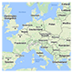

Orsum Ichnographiae – Die interaktive Weltkarte des 2. Weltkrieges
Info
-
+


Entwickelt von Philipp Fehr und Lukas Bischof im Rahmen eines Schulprojektes.
Es dient nicht dem Bildungszweck, da einige Informationen u.U. noch falsch sein könnten. Zudem werden auch noch nicht alle wichtigen Ereignisse dargestellt.